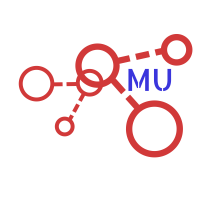

<nav class="navbar navbar-expand-lg navbar-light mb-3">
  <a class="navbar-brand" [routerLink]="['/home']">
    
  </a>

  <!-- Step 3: Toggle the value of the property when the toggler button is clicked. -->
  <button
    class="navbar-toggler"
    type="button"
    (click)="isMenuCollapsed = !isMenuCollapsed"
  >
    &#9776;
  </button>

  <!-- Step 2: Add the ngbCollapse directive to the element below. -->
  <div
    [ngbCollapse]="isMenuCollapsed"
    class="collapse navbar-collapse justify-content-around"
  >
    <ul class="navbar-nav">
      <li class="nav-item active">
        <!-- Step 4: Close the menu when a link is clicked. -->
        <a
          class="nav-link"
          [routerLink]="'/home'"
          (click)="isMenuCollapsed = true"
          >Home</a
        >
      </li>
      <li class="nav-item">
        <a
          class="nav-link"
          [routerLink]="'/services'"
          (click)="isMenuCollapsed = true"
          >Services</a
        >
      </li>
      <li class="nav-item">
        <a
          class="nav-link"
          [routerLink]="'/profile'"
          (click)="isMenuCollapsed = true"
          >Profile</a
        >
      </li>
      <li class="nav-item">
        <a
          class="nav-link"
          [routerLink]="'/skills'"
          (click)="isMenuCollapsed = true"
          >Skills</a
        >
      </li>
      <li class="nav-item">
        <a
          class="nav-link"
          [routerLink]="'/about'"
          (click)="isMenuCollapsed = true"
          >About</a
        >
      </li>
    </ul>
    <button class="btn btn-primary hireMe_btn">Hire Me</button>
  </div>
</nav>
